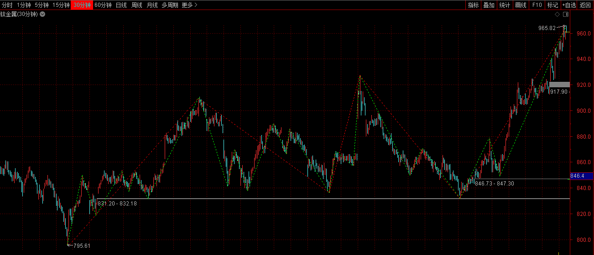

1.0 概述
级别是最总要的《缠论》概念，由于原文描述不清晰，又经常以笔画中枢，导致对于级别的称呼和原文的称呼混乱，所以在读第三遍《缠论》时，再次总结，期望同意术语。
-
级别术语
-
中枢的级别
-
走势级别
走势级别是指我们看到的不同周期的走势图，如1分钟K线图，5分钟K线图，30分钟K线图等等。
-
走势类型的级别
- 走势类型中所包含的最大的中枢的级别。是自同构性结构自组（生长）出来的，本质上与时间无关，不是时间结构，所谓1、5、30等级别只是借用时间周期命名，也可也用家庭、街道、区县命名。
- 走势类型最小的级别，就是每笔成交构成的最低级的图形，然后不断按照走势中枢的延伸、扩展、扩张等的定义精确的确认各个级别，并不涉及5分钟、30分钟和日线等。
-
1.1 从级别角度分析中枢定义：
- 中枢原始定义：某级别走势类型中 ， 被至少三个连续次级别走势类型所重叠的部分 ， 称为缠中说禅走势中枢 。 换言之 ， 缠中说禅走 势中枢就是至少三个连续次级别走势类型重叠部分所构成 。
-
线段中枢还是笔中枢
- 缠师强调的是线段中枢，线段中枢操作稳定。 `
:=
`2. 明确走势中枢的级别：某级别走势类型中 ， 被至少三个连续次级别走势类型所重叠的部分，称为本级别的走势中枢；
-
下图中，是30分钟K线图，或者说30分钟走势级别，不是30分钟走势类型的级别。

-
在30图中，红线代表线段，绿线代表严格笔。
显然红色线段中的绿色应该是一种次级别走势类型，那么按照缠论定义，这个红色线段组成的中枢级别应该是30分钟的中枢，这个中枢所代表的走势类型的级别是 2.
-